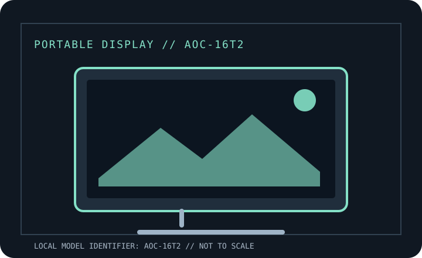

[ INDIVIDUAL COMPONENT // DISPLAYS ]
AOC 16T2 Portable Touch Monitor
Manufacturer-specific portable monitor record. Verify the full rear-label SKU, region and documentation revision before connecting power or relying on a maximum mode.

IDENTIFICATION: Portable computer monitor SKU with a unique model record. Match the rear label and regional suffix to the manufacturer's product page/manual; similarly named models may use different ports or power behavior.
Specifications
| Catalog subcategory | Portable displays |
|---|---|
| Exact product / family | AOC 16T2 Portable Touch Monitor |
| Panel / diagonal | 15.6-inch IPS LCD with 10-point projected-capacitive touch |
| Native resolution | 1920 × 1080 (Full HD) |
| Native refresh / maximum | 60 Hz |
| Brightness (typical) | 250 cd/m² typical |
| USB-C interface | Two USB-C ports support DP Alt Mode video and USB power; the built-in battery can also be charged via USB-C. AOC does not specify a universal USB-C PD pass-through wattage on the product page. |
| HDMI interface | One micro-HDMI input. HDMI video needs separate power; touch over HDMI additionally requires a USB data connection to the host. |
| Power / USB Power Delivery | Built-in 8,000 mAh rechargeable battery; USB-C external power/charging. Do not treat the USB-C port as a specified 65 W laptop-charging dock; battery runtime depends on brightness and use. |
| OSD / controls | On-device controls/OSD; touch works as HID on supported hosts. Auto-pivot/i-Menu features depend on compatible Windows software and configuration. |
| Stand / mounting | Supplied folding smart cover doubles as portrait/landscape stand; optional mounting bracket supports 75 × 75 or 100 × 100 mm patterns. |
Host, OSD & compatibility notes
USB-C video requires DP Alt Mode. HDMI permits broader video sources, but touch requires the separate USB data path; touch/software support is OS and driver dependent. Confirm power and touch paths independently.
Model-specific caveat: Do not rely on HDMI alone for touch or power. Battery, accessories and regional bundle may vary; follow the correct 16T2 guide and avoid assuming that USB-C output charges another device in every mode.
Field use & preservation
Protect the LCD/touch surface in transport, avoid loading the USB-C or HDMI sockets sideways, and test video, power and touch (where fitted) as separate signal paths. Keep the correct cable and power adapter with the monitor.
Record the rear-label model/serial, included cover/stand, cable and adapter ratings, signal timing, OSD configuration, panel condition and any repaired or substituted accessories. Do not open the enclosure; use the manufacturer's service procedure and a qualified technician.
Manufacturer documentation & sources
- AOC — 16T2 official product pageManufacturer product description and specifications for the portable touch display.
- AOC — 16T2 product documentationAOC-hosted model-specific product/documentation entry; use the matching revision and regional manual.